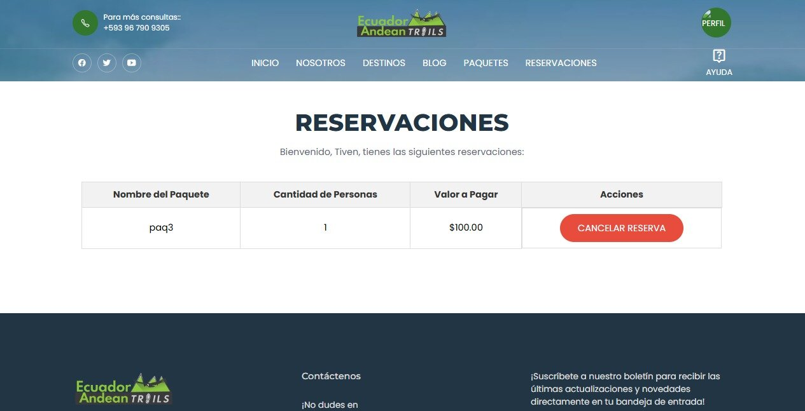
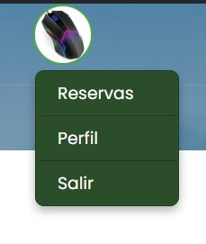

Ayuda Ecuador Andean Trails
Bienvenido a la página de ayuda de Ecuador Andean Trails. Aquí encontrarás información detallada sobre cómo utilizar nuestro sitio web y los servicios que ofrecemos.
Introducción
Gracias por visitar nuestra sección de ayuda. Esperamos que la información proporcionada te sea útil para disfrutar de una experiencia más completa y sin contratiempos con Ecuador Andean Trails. Si tienes alguna otra pregunta o necesitas asistencia adicional, nuestro equipo está disponible para ayudarte. No dudes en explorar nuestras otras páginas para conocer más sobre nuestros servicios y destinos.
Reserva de paquetes
Para reservar un paquete turístico, dirígete a la sección de Paquetes y selecciona el que más te interese. Haz clic en el botón de reserva y sigue las instrucciones proporcionadas.
- Selecciona el paquete deseado.
- Elige el número de personas.
- Mostrar monto total.
- Confirma la reserva.
- Recibirás un correo electrónico de confirmación con los detalles de tu reserva. 
Perfil de usuario
En la sección de perfil, puedes actualizar tu información personal, revisar tus reservas y gestionar tus preferencias.
- Actualizar información: Modifica tus datos personales como nombre, correo electrónico y número de teléfono.
- Historial de reservas: Revisa las reservas anteriores y su estado.
- Preferencias: Configura tus preferencias de comunicación y notificaciones. 
Preguntas frecuentes
¿Cómo puedo contactar con Ecuador Andean Trails?
Puedes contactarnos a través de nuestro formulario de contacto o llamando al +593 967 077 338.
¿Puedo cancelar mi reserva?
Sí, puedes cancelar tu reserva desde tu perfil de usuario. Ten en cuenta nuestras políticas de cancelación.
¿Qué métodos de pago aceptan?
Aceptamos tarjetas de crédito, débito y pagos a través de PayPal.
Consejos de viaje
Aquí tienes algunos consejos útiles para que tu viaje sea más agradable:
- Revisa siempre las condiciones climáticas del destino antes de viajar.
- Lleva contigo una copia de tus documentos importantes.
- Infórmate sobre la cultura y las costumbres locales.
- Contrata un seguro de viaje para estar protegido ante cualquier eventualidad.
Más información
Para más detalles sobre nuestros servicios y políticas, por favor visita las siguientes secciones:
Contacto
Si necesitas más ayuda, no dudes en contactarnos. Estaremos encantados de asistirte.